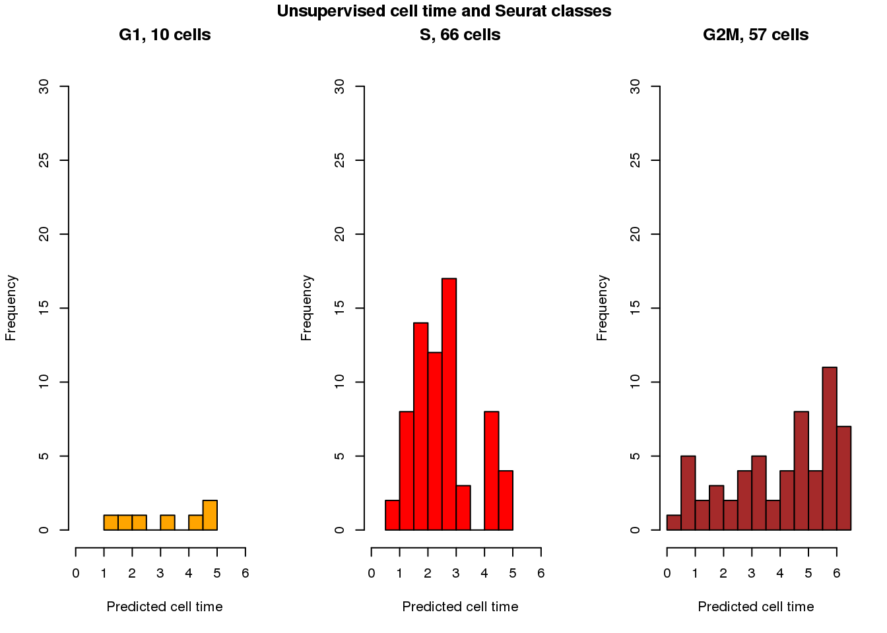
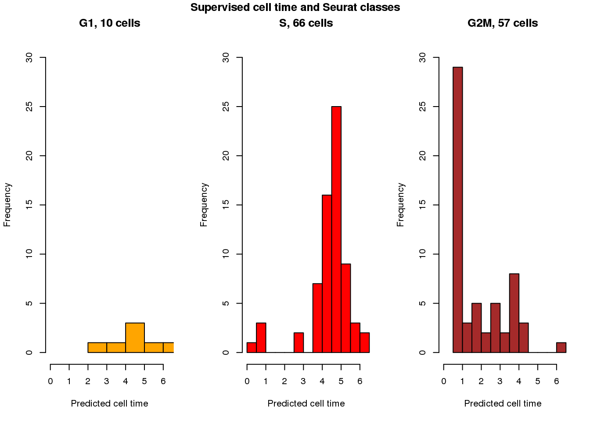
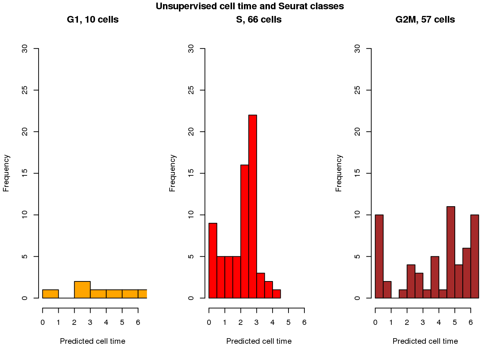
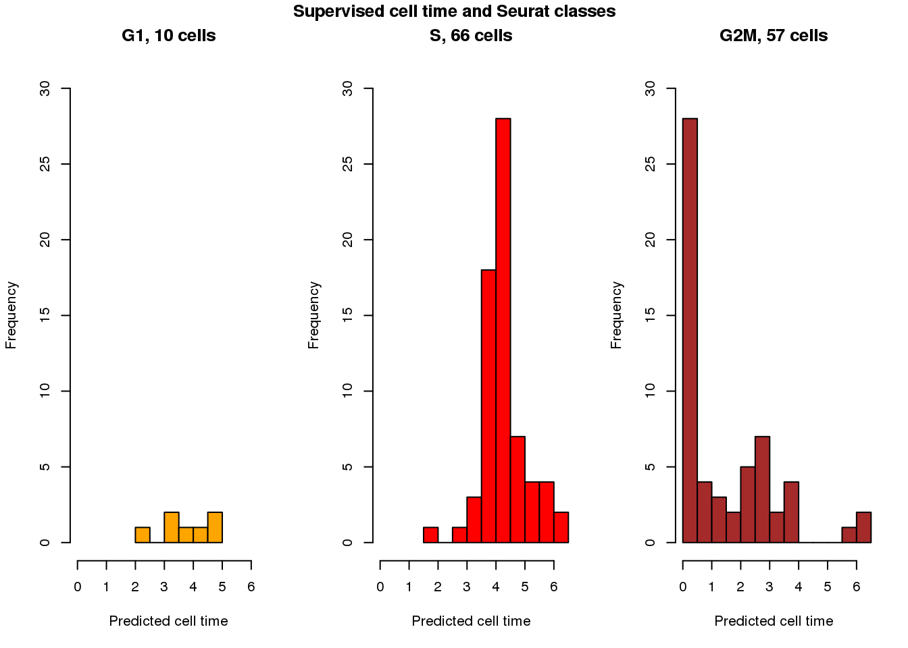

Last updated: 2018-07-04
Code version: 2498ce4
results_eval_top101 <- readRDS("../data/results/results_eval_top101.rds")
results_eval_top10 <- readRDS("../data/results/results_eval_top10.rds")source("../peco/R/utility.R")
source("../peco/R/fit.trendfilter.generic.R")
source("../peco/R/run_seurat.R")
mean(results_eval_top10$fit.supervised$diff_time)/2/pi[1] 0.1024371mean(results_eval_top10$fit.trend2.unsup$diff_time)/2/pi[1] 0.1027337mean(results_eval_top10$fit.seurat$diff_time)/2/pi[1] 0.1450893pve.wrapper <- function(results_list, methods_list) {
res <- lapply(1:length(results_list),
function(i) {
obj <- results_list[[i]]
out <- data.frame(
dapi=with(obj, get.pve(dapi[order(pred_time_shift)])$pve),
gfp=with(obj, get.pve(gfp[order(pred_time_shift)])$pve),
rfp=with(obj, get.pve(rfp[order(pred_time_shift)])$pve) )
})
names(res) <- methods_list
return(res)
}
results_list <- results_eval_top10
methods_list <- sapply(names(results_list), function(x) strsplit(x, split=".", fixed=TRUE)[[1]][2])
pve_eval_top10 <- do.call(rbind, pve.wrapper(results_list=results_eval_top10,
methods_list=methods_list))Fold 1 ... Fold 2 ... Fold 3 ... Fold 4 ... Fold 5 ...
Fold 1 ... Fold 2 ... Fold 3 ... Fold 4 ... Fold 5 ...
Fold 1 ... Fold 2 ... Fold 3 ... Fold 4 ... Fold 5 ...
Fold 1 ... Fold 2 ... Fold 3 ... Fold 4 ... Fold 5 ...
Fold 1 ... Fold 2 ... Fold 3 ... Fold 4 ... Fold 5 ...
Fold 1 ... Fold 2 ... Fold 3 ... Fold 4 ... Fold 5 ...
Fold 1 ... Fold 2 ... Fold 3 ... Fold 4 ... Fold 5 ...
Fold 1 ... Fold 2 ... Fold 3 ... Fold 4 ... Fold 5 ...
Fold 1 ... Fold 2 ... Fold 3 ... Fold 4 ... Fold 5 ...
Fold 1 ... Fold 2 ... Fold 3 ... Fold 4 ... Fold 5 ...
Fold 1 ... Fold 2 ... Fold 3 ... Fold 4 ... Fold 5 ...
Fold 1 ... Fold 2 ... Fold 3 ... Fold 4 ... Fold 5 ...
Fold 1 ... Fold 2 ... Fold 3 ... Fold 4 ... Fold 5 ...
Fold 1 ... Fold 2 ... Fold 3 ... Fold 4 ... Fold 5 ...
Fold 1 ... Fold 2 ... Fold 3 ... Fold 4 ... Fold 5 ... pve_eval_top10$genes_used <- "top10"
pve_eval_top10$methods <- methods_list
saveRDS(pve_eval_top10,
"../output/method-eval-withheld-explore.Rmd/pve_eval_top10.rds")pve_eval_top10 <- readRDS("../output/method-eval-withheld-explore.Rmd/pve_eval_top10.rds")
print(pve_eval_top10) dapi gfp rfp genes_used methods
supervised 0.125585308 0.0148850520 0.3092444 top10 supervised
trend2 0.113966791 0.0884220119 0.2200606 top10 trend2
bspline 0.101424270 0.1342596991 0.2563613 top10 bspline
loess 0.133801337 0.1079941543 0.2980371 top10 loess
seurat 0.007779095 0.0005450732 0.1126729 top10 seuratget.aov(yy=results_eval_top10$fit.seurat$dapi,
xx=results_eval_top10$fit.seurat$assignments)$pve
[1] 0.06984216
$pval
[1] 0.01161179get.aov(yy=results_eval_top10$fit.seurat$gfp,
xx=results_eval_top10$fit.seurat$assignments)$pve
[1] 0.0538643
$pval
[1] 0.03134803get.aov(yy=results_eval_top10$fit.seurat$rfp,
xx=results_eval_top10$fit.seurat$assignments)$pve
[1] 0.1285371
$pval
[1] 0.0003419435seurat.S.sup <- with(results_eval_top10,
get.pve(fit.seurat$S[order(fit.supervised$pred_time_shift)]))
seurat.S.unsup <- with(results_eval_top10,
get.pve(fit.seurat$S[order(fit.trend2.unsup$pred_time_shift)]))
seurat.G2M.sup <- with(results_eval_top10,
get.pve(fit.seurat$G2M[order(fit.supervised$pred_time_shift)]))
seurat.G2M.unsup <- with(results_eval_top10,
get.pve(fit.seurat$G2M[order(fit.trend2.unsup$pred_time_shift)]))
seurat.S.owntime <- with(results_eval_top10,
get.pve(fit.seurat$S[order(fit.seurat$cell_times_est)]))
seurat.G2M.owntime <- with(results_eval_top10,
get.pve(fit.seurat$G2M[order(fit.seurat$cell_times_est)]))
save(seurat.S.sup, seurat.S.unsup,
seurat.G2M.sup, seurat.G2M.unsup,
seurat.S.owntime, seurat.G2M.owntime,
file = "../output/method-eval-withheld-explore.Rmd/seurat.time.top10.rda")load(file="../output/method-eval-withheld-explore.Rmd/seurat.time.top10.rda")
c(seurat.S.sup$pve, seurat.G2M.sup$pve)[1] 0.3896577 0.5287918c(seurat.S.unsup$pve, seurat.G2M.unsup$pve)[1] 0.2623815 0.5239003c(seurat.S.owntime$pve, seurat.G2M.owntime$pve)[1] 0.8272036 0.8565118with(results_eval_top10,
get.aov(yy=fit.seurat$G2M,xx=fit.seurat$assignments))$pve
[1] 0.6777578
$pval
[1] 1.471869e-15with(results_eval_top10,
get.aov(yy=fit.seurat$S,xx=fit.seurat$assignments))$pve
[1] 0.5747001
$pval
[1] 9.6592e-14cols <- c("orange", "red", "brown")
par(mfrow=c(1,3))
with(results_eval_top10,
hist(fit.trend2.unsup$pred_time_shift[fit.seurat$assignments=="G1"],
nclass=5, col=cols[1], main = "G1, 10 cells", xlim=c(0,2*pi), ylim=c(0,30),
xlab="Predicted cell time"))
with(results_eval_top10, hist(fit.trend2.unsup$pred_time_shift[fit.seurat$assignments=="S"],
nclass=10, col=cols[2],
main = "S, 66 cells", xlim=c(0,2*pi), ylim=c(0,30),
xlab="Predicted cell time"))
with(results_eval_top10, hist(fit.trend2.unsup$pred_time_shift[fit.seurat$assignments=="G2M"],
nclass=10, col=cols[3],
main = "G2M, 57 cells", xlim=c(0,2*pi), ylim=c(0,30),
xlab="Predicted cell time"))
title("Unsupervised cell time and Seurat classes", outer=TRUE, line=-1)
cols <- c("orange", "red", "brown")
par(mfrow=c(1,3))
with(results_eval_top10,
hist(fit.supervised$pred_time_shift[fit.seurat$assignments=="G1"],
nclass=5, col=cols[1], main = "G1, 10 cells", xlim=c(0,2*pi), ylim=c(0,30),
xlab="Predicted cell time"))
with(results_eval_top10, hist(fit.supervised$pred_time_shift[fit.seurat$assignments=="S"],
nclass=10, col=cols[2],
main = "S, 66 cells", xlim=c(0,2*pi), ylim=c(0,30),
xlab="Predicted cell time"))
with(results_eval_top10, hist(fit.supervised$pred_time_shift[fit.seurat$assignments=="G2M"],
nclass=10, col=cols[3],
main = "G2M, 57 cells", xlim=c(0,2*pi), ylim=c(0,30),
xlab="Predicted cell time"))
title("Supervised cell time and Seurat classes", outer=TRUE, line=-1)
source("../peco/R/utility.R")
source("../peco/R/fit.trendfilter.generic.R")
source("../peco/R/run_seurat.R")
mean(results_eval_top101$fit.supervised$diff_time)/2/pi[1] 0.09062966mean(results_eval_top101$fit.trend2.unsup$diff_time)/2/pi[1] 0.1160692mean(results_eval_top101$fit.seurat$diff_time)/2/pi[1] 0.1450893pve.wrapper <- function(results_list, methods_list) {
res <- lapply(1:length(results_list),
function(i) {
obj <- results_list[[i]]
out <- data.frame(
dapi=with(obj, get.pve(dapi[order(pred_time_shift)])$pve),
gfp=with(obj, get.pve(gfp[order(pred_time_shift)])$pve),
rfp=with(obj, get.pve(rfp[order(pred_time_shift)])$pve) )
})
names(res) <- methods_list
return(res)
}
results_list <- results_eval_top101
methods_list <- sapply(names(results_list), function(x) strsplit(x, split=".", fixed=TRUE)[[1]][2])
pve_eval_top101 <- do.call(rbind, pve.wrapper(results_list=results_eval_top101,
methods_list=methods_list))Fold 1 ... Fold 2 ... Fold 3 ... Fold 4 ... Fold 5 ...
Fold 1 ... Fold 2 ... Fold 3 ... Fold 4 ... Fold 5 ...
Fold 1 ... Fold 2 ... Fold 3 ... Fold 4 ... Fold 5 ...
Fold 1 ... Fold 2 ... Fold 3 ... Fold 4 ... Fold 5 ...
Fold 1 ... Fold 2 ... Fold 3 ... Fold 4 ... Fold 5 ...
Fold 1 ... Fold 2 ... Fold 3 ... Fold 4 ... Fold 5 ...
Fold 1 ... Fold 2 ... Fold 3 ... Fold 4 ... Fold 5 ...
Fold 1 ... Fold 2 ... Fold 3 ... Fold 4 ... Fold 5 ...
Fold 1 ... Fold 2 ... Fold 3 ... Fold 4 ... Fold 5 ...
Fold 1 ... Fold 2 ... Fold 3 ... Fold 4 ... Fold 5 ...
Fold 1 ... Fold 2 ... Fold 3 ... Fold 4 ... Fold 5 ...
Fold 1 ... Fold 2 ... Fold 3 ... Fold 4 ... Fold 5 ...
Fold 1 ... Fold 2 ... Fold 3 ... Fold 4 ... Fold 5 ...
Fold 1 ... Fold 2 ... Fold 3 ... Fold 4 ... Fold 5 ...
Fold 1 ... Fold 2 ... Fold 3 ... Fold 4 ... Fold 5 ... pve_eval_top101$genes_used <- "top101"
pve_eval_top101$methods <- methods_list
saveRDS(pve_eval_top101,
"../output/method-eval-withheld-explore.Rmd/pve_eval_top101.rds")pve_eval_top101 <- readRDS("../output/method-eval-withheld-explore.Rmd/pve_eval_top101.rds")
print(pve_eval_top101) dapi gfp rfp genes_used methods
supervised 0.099929197 0.1208146060 0.2861203 top101 supervised
trend2 0.147145939 0.0948834158 0.1423536 top101 trend2
bspline 0.183418205 0.0020355877 0.3354409 top101 bspline
loess 0.004744912 0.0649387956 0.1642361 top101 loess
seurat 0.007779095 0.0005450732 0.1126729 top101 seuratget.aov(yy=results_eval_top101$fit.seurat$dapi,
xx=results_eval_top101$fit.seurat$assignments)$pve
[1] 0.06984216
$pval
[1] 0.01161179get.aov(yy=results_eval_top101$fit.seurat$gfp,
xx=results_eval_top101$fit.seurat$assignments)$pve
[1] 0.0538643
$pval
[1] 0.03134803get.aov(yy=results_eval_top101$fit.seurat$rfp,
xx=results_eval_top101$fit.seurat$assignments)$pve
[1] 0.1285371
$pval
[1] 0.0003419435seurat.S.sup <- with(results_eval_top101,
get.pve(fit.seurat$S[order(fit.supervised$pred_time_shift)]))
seurat.S.unsup <- with(results_eval_top101,
get.pve(fit.seurat$S[order(fit.trend2.unsup$pred_time_shift)]))
seurat.G2M.sup <- with(results_eval_top101,
get.pve(fit.seurat$G2M[order(fit.supervised$pred_time_shift)]))
seurat.G2M.unsup <- with(results_eval_top101,
get.pve(fit.seurat$G2M[order(fit.trend2.unsup$pred_time_shift)]))
seurat.S.owntime <- with(results_eval_top101,
get.pve(fit.seurat$S[order(fit.seurat$cell_times_est)]))
seurat.G2M.owntime <- with(results_eval_top101,
get.pve(fit.seurat$G2M[order(fit.seurat$cell_times_est)]))
save(seurat.S.sup, seurat.S.unsup,
seurat.G2M.sup, seurat.G2M.unsup,
seurat.S.owntime, seurat.G2M.owntime,
file = "../output/method-eval-withheld-explore.Rmd/seurat.time.top101.rda")load(file="../output/method-eval-withheld-explore.Rmd/seurat.time.top101.rda")
c(seurat.S.sup$pve, seurat.G2M.sup$pve)[1] 0.4832478 0.6548333c(seurat.S.unsup$pve, seurat.G2M.unsup$pve)[1] 0.5051351 0.5050090c(seurat.S.owntime$pve, seurat.G2M.owntime$pve)[1] 0.8272036 0.8565118with(results_eval_top101,
get.aov(yy=fit.seurat$G2M,xx=fit.seurat$assignments))$pve
[1] 0.6777578
$pval
[1] 1.471869e-15with(results_eval_top101,
get.aov(yy=fit.seurat$S,xx=fit.seurat$assignments))$pve
[1] 0.5747001
$pval
[1] 9.6592e-14cols <- c("orange", "red", "brown")
par(mfrow=c(1,3))
with(results_eval_top101,
hist(fit.trend2.unsup$pred_time_shift[fit.seurat$assignments=="G1"],
nclass=5, col=cols[1], main = "G1, 10 cells", xlim=c(0,2*pi), ylim=c(0,30),
xlab="Predicted cell time"))
with(results_eval_top101, hist(fit.trend2.unsup$pred_time_shift[fit.seurat$assignments=="S"],
nclass=10, col=cols[2],
main = "S, 66 cells", xlim=c(0,2*pi), ylim=c(0,30),
xlab="Predicted cell time"))
with(results_eval_top101, hist(fit.trend2.unsup$pred_time_shift[fit.seurat$assignments=="G2M"],
nclass=10, col=cols[3],
main = "G2M, 57 cells", xlim=c(0,2*pi), ylim=c(0,30),
xlab="Predicted cell time"))
title("Unsupervised cell time and Seurat classes", outer=TRUE, line=-1)
cols <- c("orange", "red", "brown")
par(mfrow=c(1,3))
with(results_eval_top101,
hist(fit.supervised$pred_time_shift[fit.seurat$assignments=="G1"],
nclass=5, col=cols[1], main = "G1, 10 cells", xlim=c(0,2*pi), ylim=c(0,30),
xlab="Predicted cell time"))
with(results_eval_top101, hist(fit.supervised$pred_time_shift[fit.seurat$assignments=="S"],
nclass=10, col=cols[2],
main = "S, 66 cells", xlim=c(0,2*pi), ylim=c(0,30),
xlab="Predicted cell time"))
with(results_eval_top101, hist(fit.supervised$pred_time_shift[fit.seurat$assignments=="G2M"],
nclass=10, col=cols[3],
main = "G2M, 57 cells", xlim=c(0,2*pi), ylim=c(0,30),
xlab="Predicted cell time"))
title("Supervised cell time and Seurat classes", outer=TRUE, line=-1)
sessionInfo()R version 3.4.3 (2017-11-30)
Platform: x86_64-pc-linux-gnu (64-bit)
Running under: Scientific Linux 7.4 (Nitrogen)
Matrix products: default
BLAS/LAPACK: /software/openblas-0.2.19-el7-x86_64/lib/libopenblas_haswellp-r0.2.19.so
locale:
[1] LC_CTYPE=en_US.UTF-8 LC_NUMERIC=C
[3] LC_TIME=en_US.UTF-8 LC_COLLATE=en_US.UTF-8
[5] LC_MONETARY=en_US.UTF-8 LC_MESSAGES=en_US.UTF-8
[7] LC_PAPER=en_US.UTF-8 LC_NAME=C
[9] LC_ADDRESS=C LC_TELEPHONE=C
[11] LC_MEASUREMENT=en_US.UTF-8 LC_IDENTIFICATION=C
attached base packages:
[1] stats graphics grDevices utils datasets methods base
other attached packages:
[1] genlasso_1.3 igraph_1.2.1 Matrix_1.2-14 MASS_7.3-50
loaded via a namespace (and not attached):
[1] Rcpp_0.12.17 lattice_0.20-35 digest_0.6.15 rprojroot_1.3-2
[5] grid_3.4.3 backports_1.1.2 git2r_0.21.0 magrittr_1.5
[9] evaluate_0.10.1 stringi_1.2.3 rmarkdown_1.10 tools_3.4.3
[13] stringr_1.3.1 yaml_2.1.19 compiler_3.4.3 pkgconfig_2.0.1
[17] htmltools_0.3.6 knitr_1.20 This R Markdown site was created with workflowr